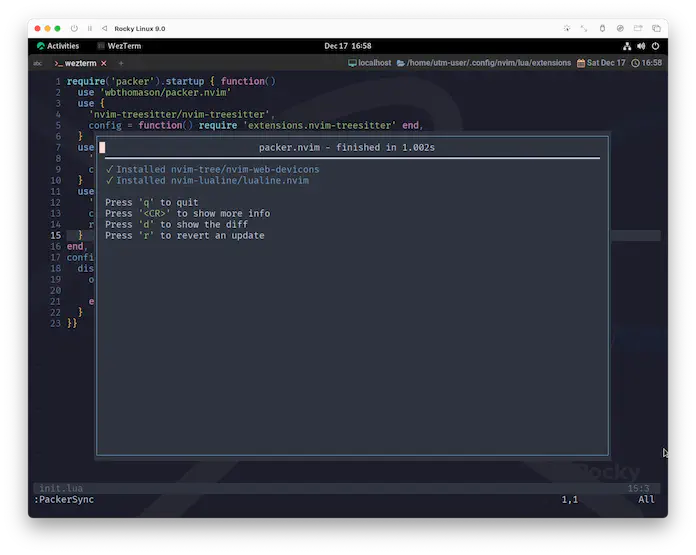
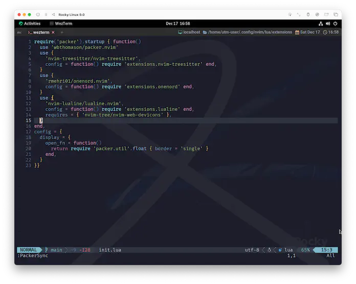
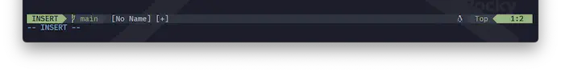

lualine.nvim
今回はステータスラインを変えてみます😉
A blazing fast and easy to configure Neovim statusline written in Lua.
Lua で書かれた、高速で設定しやすい Neovim ステータスラインです。
lualine is a statusline plugin written for neovim . It's primarily written in lua . It's goal is to provide a easy to customize and fast statusline. The idea is we will try our best to provide sane defaults also a way to overwrite that default . Best kind of customize is the one where you have the power to customize but not the need.
lualine は neovim 用に書かれたステータスライン・プラグインです。主に lua で書かれています。 その目的は、カスタマイズが容易で高速なステータスラインを提供することです。 私たちはデフォルト設定を上書きする方法も提供するために最善を尽くします。 最高のカスタマイズとは、カスタマイズできるパワーを持ちつつも、必要とされないものです。
Requirements
neovim 0.5 以上はもう大丈夫ですよね😌 nvim-web-deviconsについて、少し補足します。
Nvim-web-devicons
A lua fork of vim-devicons. This plugin provides the same icons as well as colors for each icon.
vim-devicons の lua フォークです。このプラグインは、同じアイコンを提供するだけでなく、各アイコンの色も提供します。
これはもうRequirementsのミルフィーユですね、そだねー。
もぐもぐしながら整理してみましょう😋
つまり、lualine.nvimで (ファイルタイプアイコンを使いたかったら) nvim-web-deviconsが必要で、
nvim-web-deviconsにはpatched font (Nerd Fonts)が必要ってことですね❗...🤔❓
nvim-web-deviconsのインストール自体はpackerに任せちゃえばいいので、またあとで❗
A patched font(NerdFonts)
本来なら「なんかめんどくさそうだな〜」となるところですが...、
なんと❗️WezTermはNerd Fontを持っていて、しかも既に有効になっています❗️
これ、3.2. Shell Prompt: Starshipからコピーしてきた文言です。 だって...、同じなんだもの...🥹
(こっちではNerd Fonts、あっちではNerd Fontなので、ちょっと表記にブレがあるけど。)
WezTerm以外のターミナルを使用している場合は、そのターミナルでNerd Fontsを使用するように設定する必要があります。
例えばFirgeというNerd Fontsを含んだフォントセットがあって、これも既に紹介済みです。
例として、わたしが普段お世話になっているフォントを紹介します。
wiki
冒頭の紹介文はlualine.nvim の wiki にあるものです。他にも色々と書いてくれているので、覗いてみると良いです😉
Welcome to the lualine.nvim wiki!
install
これ、やっぱパラメータが多いので手順を踏んでいきましょう。
lualine.nvimがオフィシャルに示しているコードからは少し外れますが、以下のようにしてみてください。
Default configurationで動かします。
require('lualine').setup {}
use {
'nvim-lualine/lualine.nvim',
config = function() require 'extensions.lualine' end,
requires = { 'nvim-tree/nvim-web-devicons' },
}
オフィシャルには
requires = { 'kyazdani42/nvim-web-devicons' },
として説明されているのですが、
https://github.com/kyazdani42/nvim-web-devicons
...に行こうとすると、
https://github.com/nvim-tree/nvim-web-devicons
...に飛ばされますよね。
なので、packerへの指定も、最初からこちらの URL を使用してます。
「今更だけど、なんでhttps://github.com/は無くてもいいの❓」については、
:h packer-configurationの中で説明されているdefault_url_formatが効いてるからです😆
optについてはまた今度にしましょ❓ 満を持して🦁 また改めて登場してもらうことにします❗
ってことで、いつも通り:PackerSyncしちゃいましょう😉

lualine.nvimと一緒にnvim-web-deviconsもインストールされましたね❗
Plugins may specify dependencies via the `requires` key in their specification table.
This key can be a string or a list (table).
プラグインは、その仕様テーブルの `requires` キーで依存関係を指定することができます。このキーは文字列かリスト(テーブル)です。
If `ensure_dependencies` is true, the plugins specified in `requires` will be installed.
`ensure_dependencies` が true の場合、 `requires` で指定されたプラグインがインストールされます。
ensure_dependencies = true, -- Should packer install plugin dependencies?
packer はプラグインの依存関係をインストールするべき？
Neovimパッケージは依存関係をデータとして持ち合わせていないことは
15.1. Packerで触れたんですが、
「これrequires(必要なもの) なんだよねー🤔」と教えてあげると、
packerは「ん❓そうなんれすね❓😆」と言って、一切疑わずにインストールしてくれます。
To Be Continued...
"Best kind of customize is the one where you have the power to customize but not the need."
(最高のカスタマイズとは、カスタマイズできるパワーを持ちつつも、必要とされないものです。) 
「カスタマイズは必要ない」と言う言葉の通り、もうこれで完成としてもいいんですが...、例えばこれ、左下。
二重に表示されてて絶対気になるやつ...😣 
...でも、これだけじゃない。
この先は、これまでとは違ってかなりプラグインを連携して使っていきたいので、 今まで通りに一個ずつ進めていこうとすると膨大な作業量に圧倒されてしまって...。
このページだって、半分くらいはlualine以外への言及になっちゃってますよね。
「やることが多すぎる。それは間違いない。」 1
あまりにも話が進まない...❗手詰まり感がすごい...😰
ちょっともう...、本当に...、気が遠くなってしまって...。
CoralPink 2 のてには
たたかえる ちからが ない❗
... ... ... ...
CoralPink は
めのまえが まっくらに なっ・・・
...❓
Hey, CaP..., you read me...?
(キャップ...、聞こえるか...?)
...It's nvim Trainer. Can you hear me...?
(...nvimトレーナー 3 だ。聞こえるか...?)
On your next.
(次を見てみろ。)
'showmode' 'smd' boolean (default: on)
global
If in Insert, Replace or Visual mode put a message on the last line.
The |hl-ModeMsg| highlight group determines the highlighting.
The option has no effect when 'cmdheight' is zero.
挿入、置換、ビジュアルモードの場合、最終行にメッセージを表示する。
ハイライトは |hl-ModeMsg| highlight グループによって決定される。
'cmdheight' が 0 の場合、このオプションは何の効果もない。
require('lualine').setup {}
-- ここに追記してみろ。
vim.api.nvim_set_option('showmode', false)
nvimトレーナーは帰ってきた!!
1: たまたま Elon Musk も同じようなこと言ってた。
2: このサイトを書いてる ふしぎないきもの。(はじめまして☺️ )
なんかもう、MARVELなのかポケットモンスターなのかわからない世界に飛び込んでしまった。